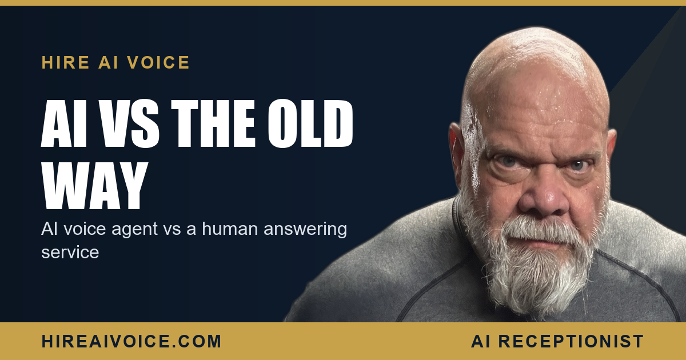

AI Voice Agent vs Answering Service: What Is Actually Different

The Short Version
- An answering service takes a message. An AI voice agent knows your business, books the job, and follows up. That is the whole difference.
- Answering service operators read a generic script across many clients. They do not know your services, your pricing, or your calendar, so the lead still has to wait for your callback.
- An AI voice agent answers instantly 24/7, knows your services and pricing, qualifies the caller, and books on the spot, usually for a flat rate that beats per-minute billing.
- A human service still fits sensitive intake work, like legal or medical triage. For booking-driven trades, the AI wins.
What Is the Difference Between an AI Voice Agent and an Answering Service?
An answering service is a room of human operators who pick up your phone, take a message, and hand it off. An AI voice agent is trained on your specific business, answers instantly, and books the job during the call. That is the core split, and everything else flows from it.
A traditional answering service is a call center. The operator who picks up your line is also picking up lines for dozens of other companies that hour. They cannot know your services, your pricing, or which slots are open on your calendar, so the best they can do is jot down a name and number and leave you a message to deal with later. The lead is captured, but it is not handled.
An AI voice agent is built around one business: yours. It greets the caller by your name, answers real questions about what you do, qualifies what the caller needs, and books the appointment on the spot. For a service business in Santa Clarita or Los Angeles County, that gap, message versus booked job, is the entire reason this matters.
Can an Answering Service Book Appointments?
Usually not in any way that counts. Most answering services take a name, a number, and a short note, then leave the callback to you. A few advertise basic scheduling, but the operator is working off a thin, generic script and cannot speak to your business with any real depth. They are not going to explain your pricing, handle an objection, or confidently lock in a Tuesday morning slot, because they do not actually know your operation.
An AI voice agent connected to your calendar does the opposite. It books the appointment while the caller is still on the line. There is no callback queue, no game of phone tag, no warm lead going cold while it sits in your voicemail. The job is done before the caller hangs up.
Is an AI Voice Agent Cheaper Than an Answering Service?
In most cases, yes, and the gap widens the busier you get. Answering services almost always bill per minute or per call, and they charge more for nights, weekends, and holidays, which is exactly when service-business calls spike. A busy month or a string of long calls can run the bill up fast and unpredictably.
An answering service charges you more the busier you get. An AI charges the same whether it takes one call or a thousand.
An AI voice agent runs on a flat monthly rate. It answers unlimited calls around the clock and does not care whether it is 2 PM on a Tuesday or 2 AM on a holiday. Our plans start at $297 per month, with a $497 tier for businesses that want deeper follow-up and integrations, and there are no contracts. You know your number before the month starts, and a busy stretch costs you nothing extra. For a per-minute service, a busy stretch is the expensive part.
When Does a Traditional Answering Service Still Make Sense?
I want to be fair to both sides here, because there are real cases where a human still belongs on the phone. If your calls are emotionally heavy, legally sensitive, or wildly unpredictable, a person matters. A law firm intake line, a crisis or medical triage line, a situation where the caller needs judgment and empathy more than they need a fast booking, those are jobs a trained human handles better than any script, AI or otherwise.
That honesty cuts the other way too. For booking-driven service businesses, the job is simple: answer fast and book the appointment. HVAC, plumbing, roofing, dental, real estate, mobile services, the customer with a dead AC unit or a cracked tooth does not want empathy from a call center, they want a confirmed time. That is the exact lane where an AI voice agent does not just match a human answering service, it beats it on speed, knowledge, and cost.
Why AI Wins for Booking-Driven Service Businesses
Stack the two up on the thing that actually moves money, and it is not close. The answering service captures a message and hands you a callback to make later, by which point your competitor may already have the job. The AI voice agent answers on the first ring, knows your business cold, and books the work during the call. One is a note on your desk. The other is a job on your calendar.
This is the whole point of an AI receptionist that answers every call 24/7: it closes the gap that a message-taking service leaves wide open. The caller at 9 PM does not get "we will pass along your message," they get a real conversation and a confirmed appointment. And because the agent sounds natural, most people never feel like they are being routed through a call center at all. If you are wondering how that lands with callers, see whether your customers will know it is AI.
There is one more layer an answering service rarely gives you: a safety net. With missed-call text-back, any call that is not handled live triggers an instant text so the conversation keeps going instead of dying in a message pad. Between instant answering and an automatic text backstop, no lead falls through.
What to Do This Week
You do not need to overthink this. Two questions sort it out fast:
1. Are your calls mostly about booking work? If a caller's goal is to get a price, a time, and a confirmation, an AI voice agent will out-answer, out-book, and under-price a traditional answering service. That is most trades and most service businesses.
2. Do your calls need human judgment and empathy first? If you run a sensitive intake line where a wrong word matters, keep a person on it, or pair the two. There is no shame in using the right tool for the call.
For the booking-driven businesses winning in Santa Clarita and LA County, the answer is the same one their busiest competitors already reached: stop paying a per-minute service to take messages, and put an AI voice agent on the phone that actually books the job.
Book the Job, Do Not Just Take a Message
Our AI voice agent answers every call 24/7, knows your business, books the appointment, and follows up automatically. Live in 72 hours. $297/month, no contracts. Or call Sarah, our live agent, and hear it yourself.